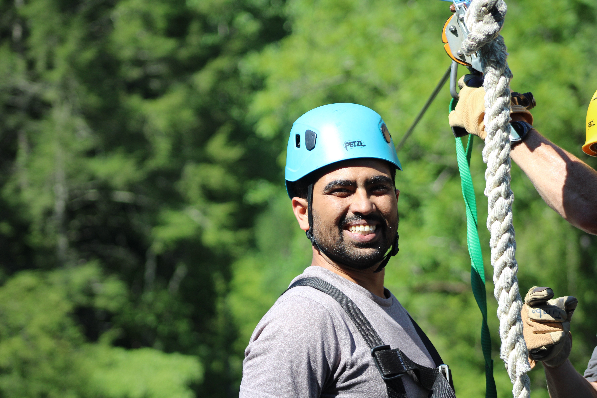

PhD - Purdue University | GeoAI research - Oak Ridge National Lab
Since 2021, I am at Purdue University working on my PhD. Before coming to Purdue I worked at Oak Ridge National Laboratory on various problems focusing on Geospatial AI with Dr. Lexie Yang and Dr. Dalton Lunga.
H. L. Yang, N. Makkar, M. Laverdiere, and A. Rose, "Boundary-aware adversarial learning domain adaption and active learning for cross-sensor building extraction", IEEE Journal of Selected Topics in Earth Observations and Remote Sensing, (Accepted) 2024.
N. Makkar, H. L. Yang, and S. Prasad, "Adversarial learning based discriminative domain adaptation for geospatial image analysis", IEEE Journal of Selected Topics in Earth Observations and Remote Sensing, 2021.
D. Lunga, R. Dhamdhere, S. Walters, L. Bragg, N. Makkar, and M. Urban, "Learning to count grave sites for cemetery observation models with satellite imagery", IEEE Geoscience and Remote Sensing Letters, 2020.
Email: nikhilmakkar2345@gmail.com
Phone: +1 (346) 818-0320
Google Scholar: View Profile